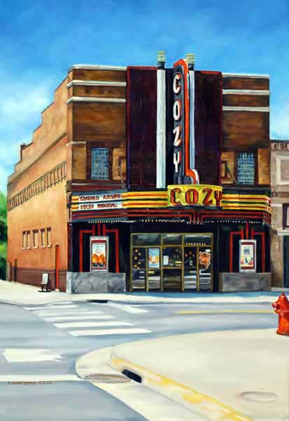

Home
Gallery: 2010 - 2014
Gallery: 2005 - 2009
Gallery: 2000 - 2004
Gallery: 1995 - 1999
Gallery: 1990 - 1994
Gallery: 1980 - 1989
Purchasing
Contact
Links
Cozy Theater

Year Photographed: 2004
Location: 223 South Jefferson, Wadena, MN
Size: 18 x 26
Year Painted: 2005
Original: NFS